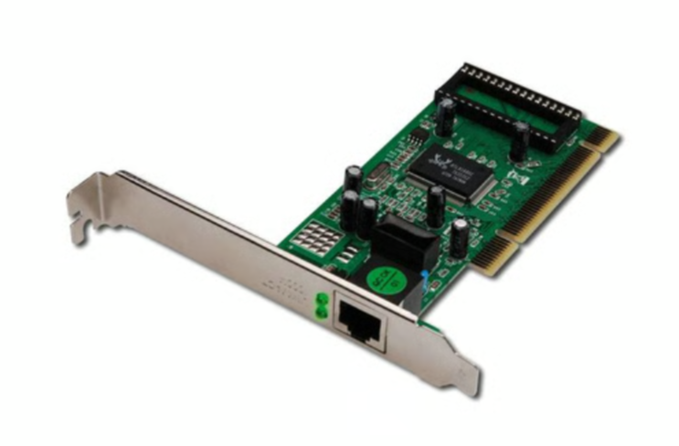
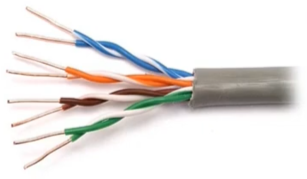
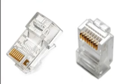
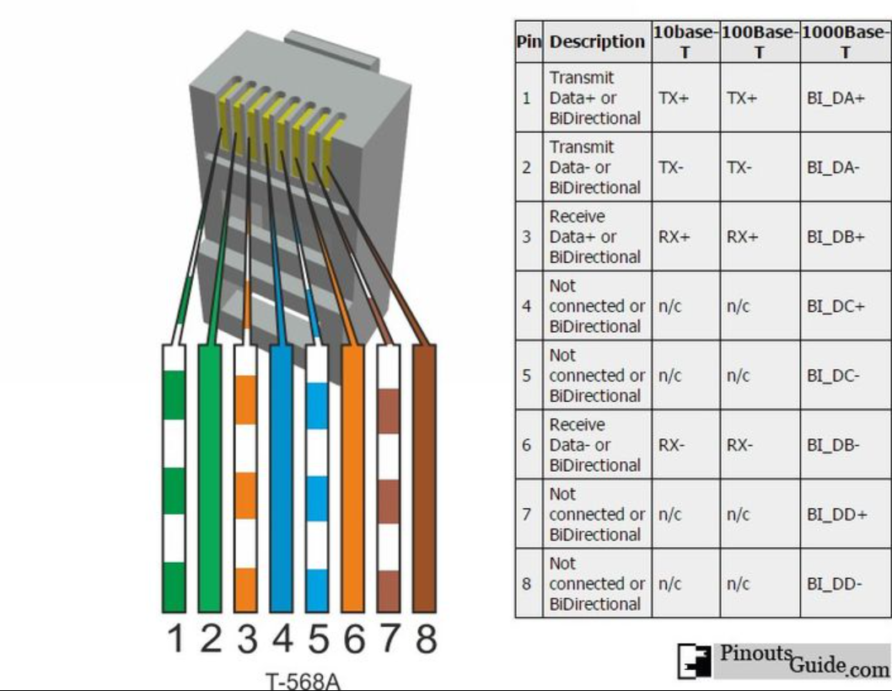
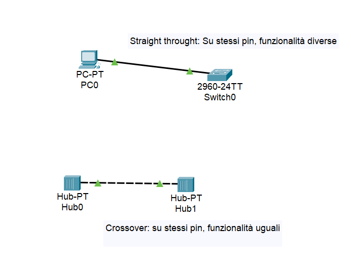
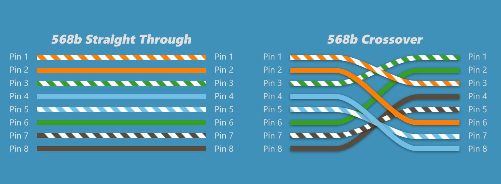

01 — Ethernet cablato: livello fisico (L1)
Standard, cablaggio, connettori e pinout Ethernet
Sommario
1. Standard IEEE e Indirizzamento
Il protocollo Ethernet definisce le regole per la comunicazione in una LAN operando sui livelli L1 (Fisico) e L2 (Data-Link).
💡 Standard principali:
- IEEE 802.3 → Reti Cablate (Ethernet standard).
- IEEE 802.11 → Reti Wireless (Wi-Fi, Access Point).
MAC Address (Media Access Control)
- Definizione: Identificativo univoco “stampato” di fabbrica sulla scheda di rete (NIC).
- Caratteristiche:
- Statico (non cambia, a differenza dell’IP che è dinamico).
- Struttura esadecimale (48 bit).
- Sicurezza: È possibile modificarlo software tramite MAC Spoofing per mascherare la propria identità.

NIC Network Interface Controller
2. Evoluzione della Velocità Ethernet
La codifica del segnale avviene tramite variazioni di tensione (es. Alta tensione = 1, Bassa tensione = 0).
| Nome Standard | Velocità (Bandwidth) | Sigla |
|---|---|---|
| Ethernet | 10 Mbps | 10BASE-T |
| Fast Ethernet | 100 Mbps | 100BASE-TX |
| Gigabit Ethernet | 1 Gbps (1000 Mbps) | 1000BASE-T |
| 10 Gigabit | 10 Gbps | 10GBASE-T |
3. Hardware di Connessione
Il Cavo: UTP (Unshielded Twisted Pair)
Cavo a doppini intrecciati non schermato.
- Funzione dell’intreccio (Twist): Serve a cancellare le interferenze elettromagnetiche (EMI) e il Crosstalk (diafonia), ovvero evita che il segnale di un filo disturbi quello adiacente.

Il Connettore: RJ45
- Standard derivato dalla telefonia.
- Si inserisce nella porta della NIC (Network Interface Controller).
- Contiene 8 pin (contatti metallici) che toccano gli 8 fili di rame del cavo.

RJ-45 (Registered Jack 45 standard), dalla telefonia
Categorie (Cat)
Standard TIA/EIA che certifica la qualità costruttiva (frequenza/velocità).
- Vedi pagina dedicata per dettagli su Cat5e, Cat6, ecc.
Evita interferenze elettromagnetiche e crosstalk (evita che il segnale di un cavo interferisca con quello vicino)
| Categoria | Velocità Max | Frequenza (Larghezza di Banda) | Note / Utilizzo |
|---|---|---|---|
| Cat 5 | 100 Mbps | 100 MHz | ⛔ Obsoleto. Non si usa più. |
| Cat 5e | 1 Gbps | 100 MHz | ✅ Standard Base. La “e” sta per Enhanced (Migliorato). Riduce le interferenze rispetto al Cat5. |
| Cat 6 | 10 Gbps* | 250 MHz | 🚀 Standard Attuale. Ideale per uffici moderni. *I 10Gbps sono garantiti solo fino a 55 metri. |
| Cat 6a | 10 Gbps | 500 MHz | 🏢 Enterprise. La “a” sta per Augmented. Supporta 10Gbps su lunghe distanze (100m). |
| Cat 7/8 | 40 Gbps+ | 600-2000 MHz | 🏭 Datacenter. Usati per server farm, molto costosi e rigidi. |
4. Cablaggio e Pinout (Cable Pinout)
Il Pinout è lo schema che definisce l’ordine dei fili colorati all’interno del connettore RJ45.
⚠️ Concetto Chiave: Una comunicazione avviene se c’è un circuito chiuso:
- Il pin che INVIA (Tx) su un lato deve collegarsi al pin che RICEVE (Rx) sull’altro.(Rx e Tx sono standard definiti da MDI = Media Dependent Interface)

Non tutti i pin servono a seconda della tecnologia
Tipi di connessioni

Esempio da Cisco packet tracer
Straight-Through (Cavo Dritto)
- Quando si usa: Dispositivi DIVERSI.
- Host ↔ Switch
- Router ↔ Switch
- Logica: I dispositivi hanno funzioni opposte sui pin (lo Switch riceve dove il PC invia). Il cavo deve essere dritto.
Crossover (Cavo Incrociato)
- Quando si usa: Dispositivi UGUALI.
- Host ↔ Host (PC collegati direttamente)
- Switch ↔ Switch
- Logica: Se entrambi i dispositivi inviano sul pin 1, c’è collisione. Bisogna incrociare i fili nel cavo.

💡 Nota su Gigabit Ethernet (1000 Mbps): A differenza della Fast Ethernet, la Gigabit usa tutte e 4 le coppie (8 fili). Inoltre, la maggior parte delle schede moderne supporta Auto-MDIX: riconoscono automaticamente il tipo di cavo e invertono i pin via software, rendendo inutile il cavo crossover manuale.